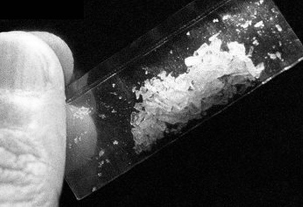

Shabú
Es conocida como “la droga de los pobres” y se consume fundamentalmente en Asia, en ocasiones para afrontar largas jornadas de trabajo. Esta droga es un potente estimulante por su alto potencial de adicción.
Según los expertos, provoca alucinaciones y psicosis más potentes que los de la heroína o el LSD, y la Policía filipina atribuye a la conducta agresiva derivada de su consumo muchos de los asesinatos y otros crímenes violentos que cada día se cometen en el país.
El 'shabú' es una metanfetamina cristalina consumida casi exclusivamente por ciudadanos filipinos y muy extendida en el sudeste asiático y en EE.UU., que en muy pocas ocasiones se había detectado en España. Se trata de un potente estimulante con un alto potencial de adicción que hace que estés despierto días. Agentes de la Policía Nacional han detenido a 42 personas en el marco de una operación dirigida a desarticular una de las principales redes delictivas dedicadas al menudeo y tráfico de 'shabú' en España.
Es conocida como "la droga de los pobres" y se consume fundamentalmente en Asia, en ocasiones para afrontar largas jornadas de trabajo.
Esta droga es un potente estimulante incluido por la Convención Internacional de Psicotrópicos en la lista II por su alto potencial de adicción.
Según los expertos, provoca alucinaciones y psicosis más potentes que los de la heroína o el LSD, y la Policía filipina atribuye a la conducta agresiva derivada de su consumo muchos de los asesinatosy otros crímenes violentos que cada día se cometen en el país.
La sustancia conocida por los químicos como metanfetamina hidroclorídrica o cristalina afecta al sistema nervioso y a corto plazo puede causar insomnio, irritabilidad, agresividad y paranoia.
A largo plazo en dependientes crónicos, sus efectos son todavía más perniciosos, pues la droga erosiona los vasos sanguíneos que llegan al cerebro, generando síntomas parecidos a los del Parkinson, alertan las autoridades sanitarias.

Provoca enfermedades incurables
Una de las enfermedades asociadas más conocida es la temida "meth mouth" o "meta-boca", gracias a la que es fácil reconocer a los adictos porque sus dientes toman un color grisáceo y se deterioran a un ritmo tan rápido que se caen a los pocos meses. Se deja reposar bajo la lengua para que mezcle con el riego sanguíneo y dé el esperado "subidón".
Se distribuye en pequeños cristales que se fuman vaporizados y sin emitir olor alguno en las mismas pipas que se utilizan para la heroína pero en dosis mucho menores, de apenas 0,1 gramos frente al gramo habitual para los opiáceos.
El efecto: aumenta la energía
Una bolsita de esa cantidad, con una calidad del 80 por ciento, vale actualmente en el mercado local menos de diez euros, pese a que el precio ha subido de forma exponencial por la cada vez mayor demanda.
Esa cantidad de shabú es suficiente para que el usuario experimente durante hasta doce horas un drástico aumento de la energía corporal y sensación de euforia y nerviosismo.
No obstante, a la vez produce contracción espasmódica de los músculos, sudoración, alucinaciones y, en cuanto empieza a remitir la euforia, brotes de psicosis y violencia, entre otros efectos.
Fabricación fácil y barata
La fabricación de la droga es poco costosa y sencilla, ya que su principal componente activo, la efedrina, se halla en muchos medicamentos paracombatir el resfriado legales en todo el mundo pero prohibidos en Filipinas.
De cien kilos del fármaco se pueden extraer hasta 70 kilos de droga, señalan fuentes de la lucha antidroga. Si una micra de coca se vende entre 5 y 6 euros, por la micra de "shabú" se pagan entre 50 y 150 euros, dependiendo de la cantidad que se pueda ofrecer.
Por lo general, el shabú es elaborado en laboratorios móviles operados por capos itinerantes de las mafias chinas que casi siempre son desmantelados a tiempo antes de ser descubiertos por la Policía.
El tráfico de esta sustancia es ahora una industria que mueve cientos de miles de euros al día, según datos de Naciones Unidas.
El poder de las bandas de narcotraficantes es tal, que se está convirtiendo en un y jueces en una de las naciones consideradas de las más corruptas del mundo.
Costo(micra por euros):
Cocaína
€5/6
Shabú
$50/150